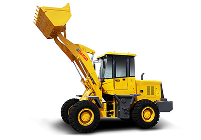
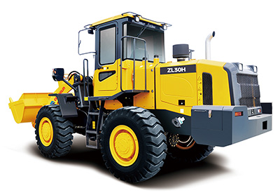
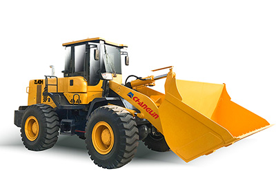
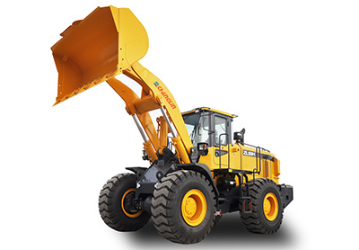
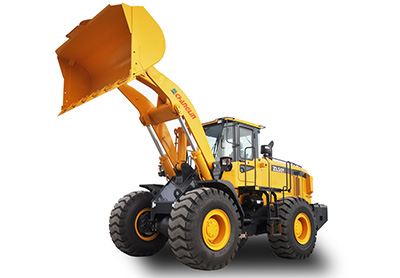
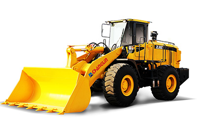
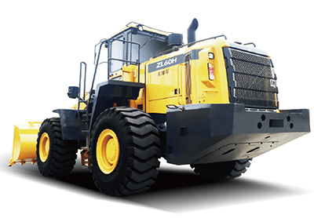
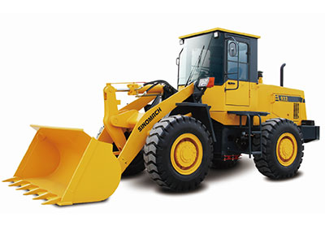

Колесные погрузчики
Колесные погрузчики относятся к четвертому поколению строительной техники CHANGLIN, которая специально разработана для быстроного и эффективного выполнения погрузочно-разгрузочных работ. Наши колесные погрузчики имеют широкий спектр новых возможностей, функций и передовых технологических усовершенствований, которые способствуют повышению эффективности работы, превосходной производительности, повышению производительности и безопасной эксплуатации.
-
- 
- Колесный погрузчик ZL18H
Фронтальный погрузчик ZL18H оснащен отечественным двигателем YUNNEI с 2 передачами переднего хода и 2 передачами заднего хода. Гидравлический цилиндр оснащен комбинированными уплотнениями для предотвращения утечек. Этот погрузчик подходит для любых условий работы с высокой эффективностью работы.
- Номинальная нагрузка 2000Кг
- Номинальная нагрузка 65кВт
- Номинальная вместимость ковша 1.0m³
-
- 
- Колесный погрузчик ZL30H
Колесный погрузчик ZL30H — новейшая разработка CHANGLIN, которую можно использовать в самых разных условиях работы. Эта строительная машина имеет ряд новых характеристик, функций и технологических улучшений, которые способствуют повышению эффективности работы, повышению производительности и повышению безопасности эксплуатации.
- Номинальная нагрузка 3000Кг
- Номинальная нагрузка 97/92кВт
- Номинальная вместимость ковша 1.7m³
-
- 
- Колесный погрузчик ZL40H
Колесный погрузчик ZL40H — это тяжелое оборудование, подходящее для строительных проектов, на которых необходимо перемещать тяжелые грузы. Коробка передач с технологией ZF используется для более комфортной работы. Эти колесные погрузчики отличаются рядом новых характеристик, функций и технических улучшений для повышения эффективности работы, производительности и безопасности.
- Номинальная нагрузка 4000Кг
- Номинальная нагрузка 132кВт
- Номинальная вместимость ковша 2.3m³
-
- 
- Колесный погрузчик ZL50H
Колесный погрузчик ZL40H — это тяжелое оборудование, подходящее для строительных проектов, на которых необходимо перемещать тяжелые грузы. Коробка передач с технологией ZF используется для более комфортной работы. Эти колесные погрузчики отличаются рядом новых характеристик, функций и технических улучшений для повышения эффективности работы, производительности и безопасности.
- Номинальная нагрузка 5000Кг
- Номинальная нагрузка 162кВт
- Номинальная вместимость ковша 3.1m³
-
- 
- Колесный погрузчик ZL50T
Колесный погрузчик ZL50T представляет собой гибкую и строительную технику с высокой эффективностью работы и малым радиусом поворота. Длинный кузов транспортного средства с высокой устойчивостью к опрокидыванию предотвращает опрокидывание колесного погрузчика, обеспечивая при этом высокую грузоподъемность. Колесный погрузчик широко используется для тяжелых погрузочных работ, как правило, для погрузки сыпучих материалов ковшом на угольных складах, в грузовых портах и на строительных площадках.
- Номинальная нагрузка 5000Кг
- Номинальная нагрузка 162кВт
- Номинальная вместимость ковша 3.1m³
-
- 
- Колесный погрузчик ZL50Z
Колесный погрузчик CHANGLIN ZL50Z представляет собой экономичное землеройное оборудование нового поколения, в котором передовые технологии сочетаются с опытом CHANGLIN в разработке и производстве колесных погрузчиков. Обладая такими преимуществами, как исключительная производительность, высокая эффективность, удобное техническое обслуживание и комфортная эксплуатация, колесный погрузчик часто применяется при перевозке крупных и тяжелых материалов, обычно подходящих для погрузки лопатой материалов с большим удельным весом.
- Номинальная нагрузка 5000Кг
- Номинальная нагрузка 162кВт
- Номинальная вместимость ковша 3.1m³
-
- 
- Колесный погрузчик ZL60H
Колесные погрузчики ZL60H представляет собой четвертое поколение строительной техники CHANGLIN, разработанное с большим кузовом и длинной колесной базой для работы с тяжелыми грузами в различных условиях работы. Коробка передач ZF обеспечивает лучшее согласование мощности и более удобное управление. Колесный погрузчик разработан с рядом новых функций и современных технологических усовершенствований, которые способствуют повышению эффективности работы, превосходной производительности и повышению безопасности эксплуатации.
- Номинальная нагрузка 6000Кг
- Номинальная нагрузка 174.5кВт
- Номинальная вместимость ковша 3.7m³
-

- Колесный погрузчик ZL80H
Колесный погрузчик ZL80H отличается комфортной работой, топливной экономичностью и низким уровнем выбросов. Благодаря коробке передач ZF, мосту ZF с мокрым тормозом и высококачественным гидравлическим компонентам от всемирно известных брендов можно эффективно использовать каждую деталь и разумно согласовать мощность. Колесный погрузчик обладает мощным усилием проникновения и отрыва, что обеспечивает превосходную производительность при любых условиях работы.
- Номинальная нагрузка 7500Кг
- Номинальная нагрузка 216кВт
- Номинальная вместимость ковша 4.2m³
-
- 
- Колесный погрузчик 933
Три передачи переднего и три заднего хода.
Комбинированные уплотнения гидравлического цилиндра для надёжной защиты от протечек.- Номинальная нагрузка 3000Кг
- Номинальная нагрузка 92кВт
- Номинальная вместимость ковша 1.7m³
-
- Колесный погрузчик 957S
Наш колесный погрузчик 957S оснащен высококачественным двигателем Shangchai SC11CB220G2B1 или двигателем Cummins. Машина использует 4 передние и 3 задние коробки передач с переключением скоростей под нагрузкой.
- Номинальная нагрузка 5000Кг
- Номинальная нагрузка 162кВт
- Номинальная вместимость ковша 3.0m³